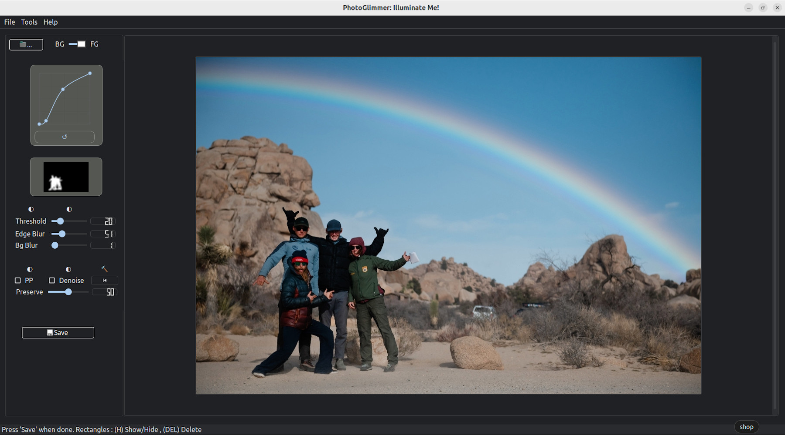
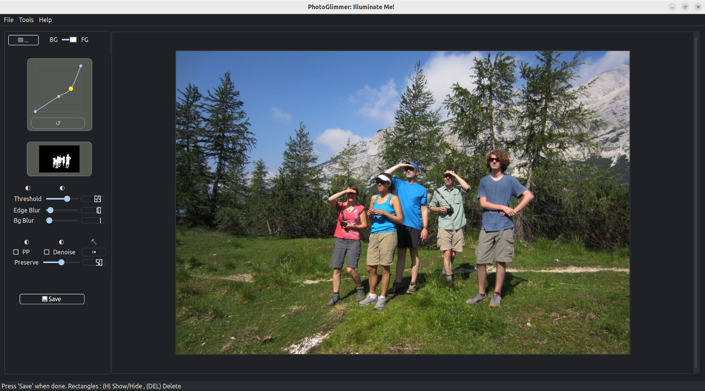

Photoglimmer Screenshots. ♠ ♠ Image credits
PhotoGlimmer is a free and open-source image editor distributed under the LGPL license. It is designed to enhance lighting on people or pets in photos with complex or stunning backgrounds, ensuring that the subjects look just as good as their surroundings.
|  |  | |
|
Ctrl+O to select an image.Ctrl+S to export your final image.H. Press H again to show them.Del key.H to unhide them.
Ctrl+O – Open imageCtrl+S – Save imageH – Toggle visibility of rectanglesDel – Delete selected rectangleRight Mouse Button – View original image temporarilyPhotoGlimmer is licensed under the LGPL (Lesser General Public License). You are free to use, modify, and distribute the software as per the terms of this license. You will need to credit the original developer and link back to the PhotoGlimmer project
A: PhotoGlimmer is an AI powered open-source image editing tool for enhancing the lighting and exposure of people or pets in photos — with a simple slider-based manual control on the process.
A: Yes, The program you install is fully self-contained and does not use any online connection
A: PhotoGlimmer installer is about 250 MBs in size. However, being a self-contained package, the install size is larger at about 900MBs
A: No, PhotoGlimmer is totally CPU. But you better have 4 GB RAM or above on your system
A: PhotoGlimmer uses built-in AI to automatically detect people or pets in your photos. It shows a grayscale segmentation mask in the left panel as soon as the image is opened. You can further control the detection level.
A: You can adjust the detection using the Threshold slider to grow or shrink the AI-generated mask. You can also draw rectangles to manually guide or override the detection.
A: Absolutely! Just draw rectangular selections over the image using your mouse. This allows you to focus on specific people, pets, or even just body parts like faces or hands.
A: Use the Brightness and Saturation sliders to fine-tune the look. For more advanced control, you can switch to curve-based adjustments via Tools > Preferences.
A: If increasing brightness creates a harsh edge between the enhanced area and the background, the Edge Blur slider helps smooth out the transition for a more natural look.
A: Yes! Use the BG/FG toggle at the top of the interface to switch between editing the background or the foreground.
BG Blur applies a soft blur to the background, helping your subject stand out. Preserve controls the overall intensity of changes applied to the image, keeping things subtle or dramatic — your call!
A: Just click the ⏮ button to reset all edits and return to the original image.
A: Yes. Press and hold the right mouse button over the image to temporarily show the unedited version.
Rectangles help you control where the AI focuses. You can draw multiple rectangles, move them, resize them using the edges (not corners), and delete them with the Del key. Press H to hide or show them. Just remember: you can’t add new ones while they’re hidden.
A: It applies a subtle noise reduction filter to the final image. It can improve image quality, but may slow down performance a bit.
Tooles>FG to clipboard? menu for?A: Us it if you want to copy people in the foreground onto a more feature rich editor like GIMP . Copies the unedited version.
A: Yes! PhotoGlimmer is free and open-source, licensed under the LGPL. Feel free to use, modify, and share it. Respect the license
A: No. The LGPL license conditions apply only to someone using this application's code to create a new application.
A: Mediapipe, Opencv , Pyside2 , Qt5.5 , and recently a good dose of help from Gemini, openAI and Perplexity
A: To keep the file size in check.
A: Because I have also cobbled together a decent comment remover for Python. It's here -
NoCommentsPython 😈
Actually , the current code is quite a mess. All this started as a mere script.
I plan to put all the comments back in after I have made the code modular proper.
A: Installers for the newest versions can be found near the top of Phogtoglimmer's github page
A: Appimage for All linux flavours. .deb for perfect integration with Ubuntu, .msi for Windows
A: at this point there are not many older versions. But all installers can be found under Assets section for each release on Phogtoglimmer's Release page on github
A: That happens rarely. In that case run the installation from command line. Install whatever missing requirement it reports and you are all set.
PhotoGlimmer is a photo editor with one objective- To make it easy for photography enthusiasts like me to highlight people in the foreground without requiring astronomical level of image editing skills; at the same time it should also give you the ability and satisfaction of manual editing. Standing in a mountain's shadow or enjoying a setting sun, we deserve to look just as good as the scenery behind us.
Here's a shot at doing that withougt using an advanced operation on a complex image editor. And having a lot more manual control than a phone app.
I hope you will find it as useful as I have, and have as much fun using it.
So go ahead. Brighten faces, blur backgrounds, and if things go wrong, there’s always the ⏮ button to start again.
psst! Somethimes, lowering the brightness and color values also works very well.
© Rahul Singh
Image credits: Flickr CC images [ joshua national park | skittledog | Newtown grafitti ] [Back to Screenshots ]